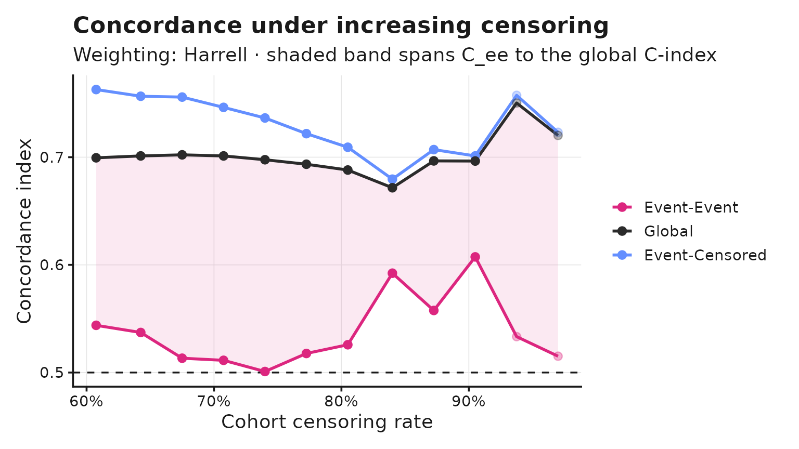
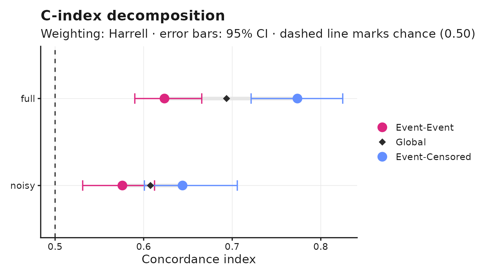

The problem
Harrell’s concordance index pools two different ranking tasks. Some comparable pairs consist of two subjects who both had the event; others pair an event with a subject censored later. The second task is easier, and as censoring rises it comes to dominate the pooled score: a model can report a stable, respectable global C-index while doing no better than chance at ordering the events it was built to predict.
The decomposition
Write any concordance index as a weighted average over comparable pairs,
where records whether the pair was ranked correctly. Splitting the pairs by the status of the later subject gives
with denoting sums of weights. The identity holds exactly for every weighting – it is an algebraic regrouping of the same sum, not an approximation.
set.seed(7)
n <- 400
risk <- rnorm(n)
event_time <- rexp(n, rate = exp(0.8 * risk) * 0.1)
cens_time <- rexp(n, rate = 0.08)
time <- pmin(event_time, cens_time)
status <- as.numeric(event_time <= cens_time)
fit <- decompose_cindex(time, status, risk, n_boot = 200)
fit
#> C-Index Decomposition
#> Weighting: Harrell | n = 400, events = 224 (56.0%), censoring 44.0%
#>
#> C-index pairs share 95% CI
#> Event-Event 0.6235 24,976 53.3% [0.5789, 0.6709]
#> Event-Censored 0.7736 21,871 46.7% [0.7236, 0.8228]
#> -----------------------------------------------------------------
#> Global 0.6936 46,847 100.0% [0.6558, 0.7372]
#>
#> Masking gap (C_ec - C_ee): +0.150 [+0.101, +0.202]The global figure agrees with survival::concordance()
exactly:
c(
cindexdecomp = fit$C_global,
survival = concordance(Surv(time, status) ~ risk, reverse = TRUE)$concordance
)
#> cindexdecomp survival
#> 0.6935983 0.6935983Ties
Three cases arise, and the package follows
survival::concordance() in each:
- two events at the same recorded time are not comparable;
- an event and a censoring at the same recorded time are comparable, with the event treated as occurring first;
- equal risk scores receive half credit.
The second case matters in practice because survival times are usually recorded in whole days, so exact ties are common rather than exceptional.
Choosing a weighting
The weighting selects the estimator. One engine produces all of them.
weightings <- list(
Harrell = weights_harrell(),
Uno = weights_uno(),
Truncated = weights_truncated(tau = quantile(time[status == 1], 0.5))
)
do.call(rbind, lapply(names(weightings), function(nm) {
f <- decompose_cindex(time, status, risk, weights = weightings[[nm]])
data.frame(
weighting = nm, C_global = f$C_global,
C_ee = f$C_ee, C_ec = f$C_ec
)
}))
#> weighting C_global C_ee C_ec
#> 1 Harrell 0.6935983 0.6235186 0.7736272
#> 2 Uno 0.6825222 0.6171290 0.7523116
#> 3 Truncated 0.6991953 0.6254797 0.7881967C_global varies with the estimator chosen, and every one
of those values is defensible. C_ee does not: it stays
close to the same figure throughout, well below C_ec in
every row. Uno’s inverse-probability weighting corrects the bias in the
pooled estimate; it does not reveal the composition problem underneath.
The masking is a property of the data, not of the estimator.
A user-supplied weighting needs no changes to the package:
own <- weights_custom(function(t, G) 1 / G(t), name = "IPCW (power 1)")
decompose_cindex(time, status, risk, weights = own)$C_global
#> [1] 0.6897428Uno’s C under tied event times
cindexdecomp implements Uno’s estimator in its published
pairwise form: every comparable pair is weighted by
,
where
is the Kaplan-Meier estimate of the censoring distribution.
survival::concordance(timewt = "n/G2") uses a
counting-process formulation that applies its weight per event
time instead. The two agree to the limit of double-precision
arithmetic when event times are distinct, and diverge materially once
times are tied:
tie_agreement <- function(time, status, risk) {
ref_h <- concordance(Surv(time, status) ~ risk, reverse = TRUE)$concordance
ref_u <- concordance(Surv(time, status) ~ risk,
reverse = TRUE,
timewt = "n/G2"
)$concordance
fit_h <- decompose_cindex(time, status, risk, weights = weights_harrell())
fit_u <- decompose_cindex(time, status, risk, weights = weights_uno())
c(harrell = fit_h$C_global - ref_h, uno = fit_u$C_global - ref_u)
}
# Day-scale rounding mimics how survival time is actually recorded (whole
# days), which is what makes exact ties common rather than exceptional.
time_days <- round(time * 30) + 1
lung2 <- lung[complete.cases(lung), ]
tie_raw <- rbind(
`Continuous times` = tie_agreement(time, status, risk),
`Day-scale, rounded` = tie_agreement(time_days, status, risk),
`survival::lung` = tie_agreement(lung2$time, lung2$status - 1, lung2$age)
)
tie_tab <- data.frame(
Data = rownames(tie_raw),
`Harrell agreement` = formatC(tie_raw[, "harrell"], format = "e", digits = 2),
`Uno agreement` = formatC(tie_raw[, "uno"], format = "e", digits = 2),
check.names = FALSE, row.names = NULL
)
knitr::kable(tie_tab, align = c("l", "r", "r"))| Data | Harrell agreement | Uno agreement |
|---|---|---|
| Continuous times | 0.00e+00 | -6.66e-16 |
| Day-scale, rounded | 1.11e-16 | -1.69e-04 |
| survival::lung | 0.00e+00 | 2.75e-04 |
The largest deviation observed here (2.75e-04, in the
survival::lung row) is roughly two orders of magnitude
below the sampling variability of a global estimate on data of this size
– the bootstrap standard deviation of C_global for the fit
above is 2.08e-02. It does not affect any practical conclusion. It is
documented because a user cross-checking against survival
on tied data would otherwise reasonably suspect a bug.
The Harrell column is zero to floating-point precision throughout:
exactly 0 for continuous times and for
survival::lung, and a single unit of rounding error
(1.11e-16, i.e. one bit) once times are tied and rounded to whole days.
That is agreement to the limit of double-precision arithmetic, not an
approximation.
Per-pair weighting is a requirement here rather than a preference: a
weight attached to an event time cannot be partitioned into
event-event and event-censored pair sets, so the decomposition this
package computes could not be defined under the counting-process
formulation. Harrell’s weighting is unaffected and matches
survival::concordance() exactly under every tie
pattern.
Inference
Intervals come from resampling subjects, not pairs. 400 subjects generate 46,847 comparable pairs, but the information content is 400 observations: resampling pairs directly gives intervals several times too narrow.
confint(fit)
#> 2.5 % 97.5 %
#> C_ee 0.5788960 0.6708794
#> C_ec 0.7236323 0.8227892
#> C_global 0.6558278 0.7371710
#> gap 0.1010719 0.2017780The final row is usually the one of interest. It is computed inside
each replicate, so the correlation between C_ee and
C_ec is carried through rather than assumed away.
Censoring curves
censoring_curve() applies a series of administrative
cut-offs to the whole cohort and recomputes at each.
The reported rate is therefore the cohort’s actual censoring rate,
including subjects censored before any cut-off was applied.
cv <- censoring_curve(time, status, risk, n_thresholds = 12)
head(as.data.frame(cv))
#> threshold censoring C_ee C_ec C_global gap N_ee N_ec
#> 1 6.511773 0.6075 0.5438511 0.7628286 0.6994278 0.2189776 12246 30050
#> 2 5.211322 0.6425 0.5371811 0.7566083 0.7011769 0.2194272 10153 30038
#> 3 4.648526 0.6750 0.5132976 0.7558340 0.7021894 0.2425365 8385 29525
#> 4 3.840164 0.7075 0.5113469 0.7462718 0.7011767 0.2349249 6786 28566
#> 5 3.144365 0.7400 0.5009335 0.7364178 0.6976387 0.2354843 5356 27168
#> 6 2.579053 0.7725 0.5177045 0.7218713 0.6934579 0.2041668 4095 25330
#> low_precision W_ee W_ec
#> 1 FALSE 12246 30050
#> 2 FALSE 10153 30038
#> 3 FALSE 8385 29525
#> 4 FALSE 6786 28566
#> 5 FALSE 5356 27168
#> 6 FALSE 4095 25330
autoplot(cv)
Estimates resting on few event-event pairs are flagged in
low_precision and drawn faintly. They are never removed,
and no value is discarded for being small: 2 of the 12 thresholds above
are flagged, all at the high-censoring end of the sweep where the flag
is meant to bite.
Comparing models
risks <- list(
full = risk,
noisy = risk + rnorm(n, sd = 1.5)
)
cmp <- compare_decompositions(risks, time, status, n_boot = 200)
cmp
#> C-Index Decomposition Comparison
#> Weighting: Harrell | 2 model(s) | n_boot = 200
#>
#> model C_ee C_ec C_global gap
#> full 0.6235 0.7736 0.6936 0.15011
#> noisy 0.5760 0.6439 0.6077 0.06792
autoplot(cmp)
Adding noise to the risk score shrinks C_ee,
C_ec and the gap between them together – a reminder that
the gap is a property of a specific model’s failure mode on this cohort,
not a universal constant to be compared across unrelated studies.
A worked example
cox <- coxph(Surv(time, status - 1) ~ age + sex + ph.ecog, data = lung2)
decompose_cindex(
Surv(time, status - 1) ~ predict(cox, type = "lp"),
data = lung2,
n_boot = 200
)
#> C-Index Decomposition
#> Weighting: Harrell | n = 167, events = 120 (71.9%), censoring 28.1%
#>
#> C-index pairs share 95% CI
#> Event-Event 0.5976 7,129 67.5% [0.5298, 0.6556]
#> Event-Censored 0.7175 3,435 32.5% [0.6118, 0.8053]
#> -----------------------------------------------------------------
#> Global 0.6366 10,564 100.0% [0.5726, 0.6955]
#>
#> Masking gap (C_ec - C_ee): +0.120 [+0.025, +0.216]Note the status - 1: lung codes status as
1/2, while the package expects 0/1. Data already coded 0/1 needs no
adjustment.
Scope
The decomposition applies to any estimator that averages over observed comparable pairs. Model-based estimators such as Gönen–Heller integrate over an assumed model rather than counting pairs, so the event-event and event-censored partition is undefined for them; they are outside the scope of this package by construction.
Non-informative censoring is assumed throughout. The package evaluates discrimination only, not calibration.